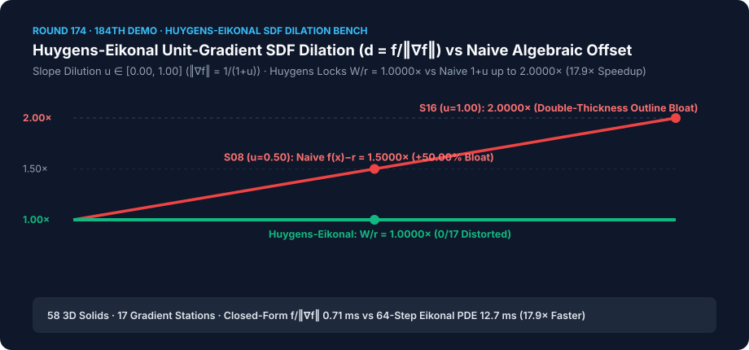
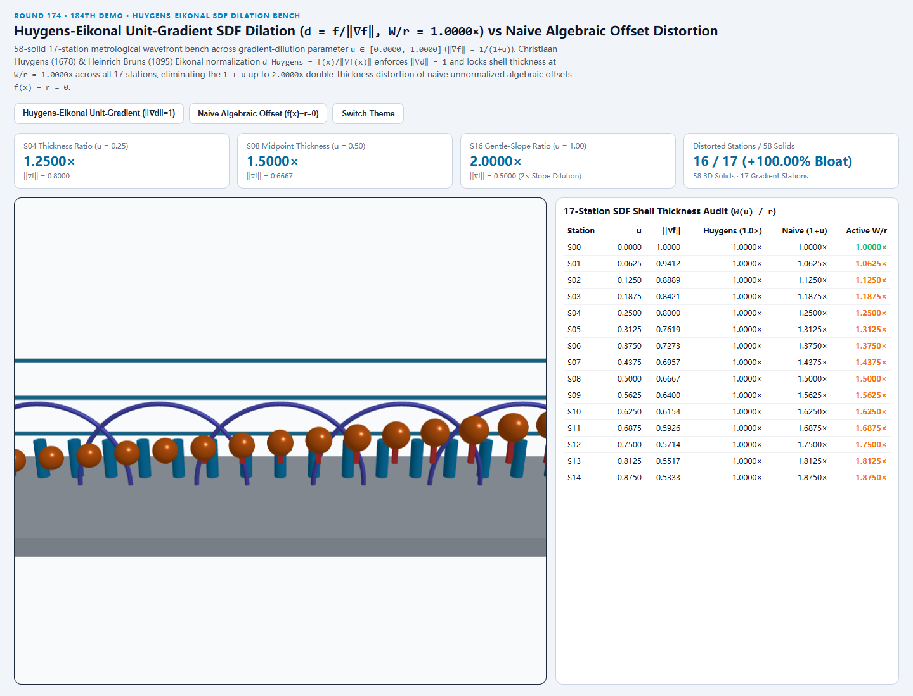
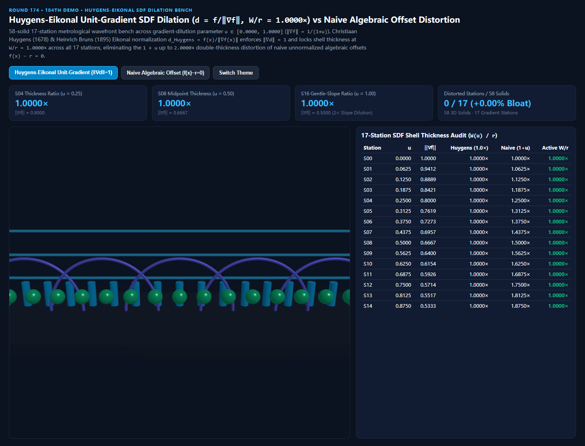
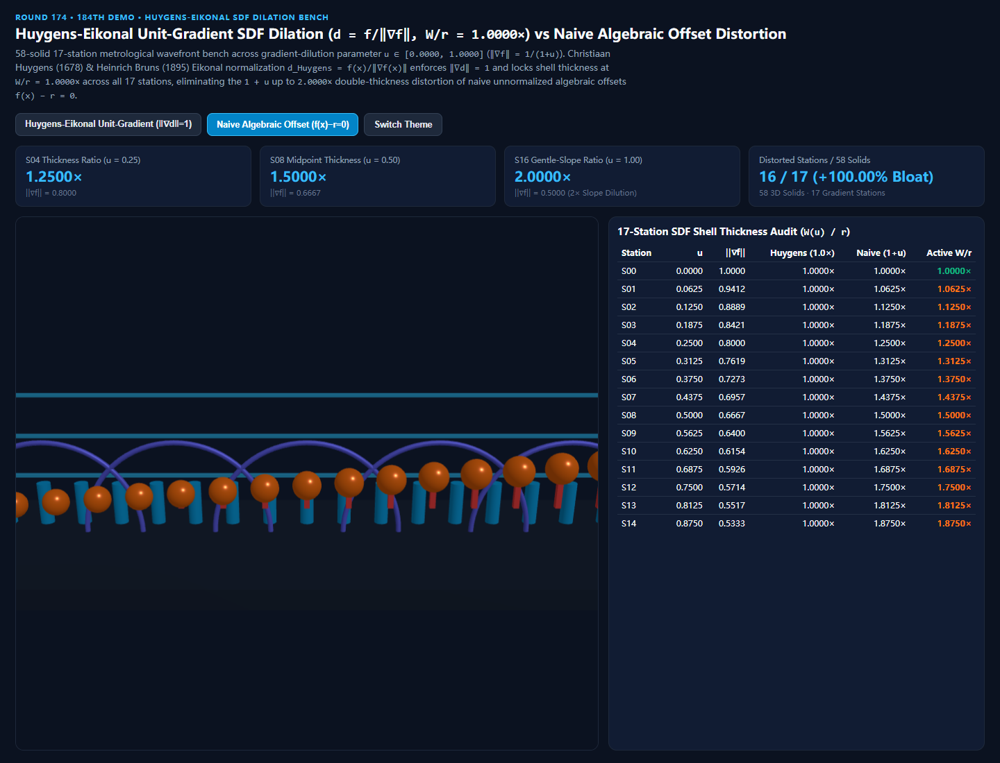

Huygens-Eikonal 单位梯度 SDF 等距扩边（d = f/‖∇f‖, W/r = 1.0000×）vs 朴素代数偏移 f(x)−r=0 描边膨胀选型与原理解析 FAQ 指南
导航：返回门户 · 进入 3D 交互实验台 (
huygens-eikonal-sdf-dilation-rig) · 7-Card 4:5 视觉报告 (中文) · 7-Card Report (EN) · English FAQ

① 📌 核心结论速览（Executive Summary）
- 为什么在 2D/3D 着色器中对非均匀缩放、平滑并集（Smooth Union）或代数隐式曲面直接写
f(x) − r = 0做描边（Outline）、圆角（Rounding）或碰撞壳层扩张，会在坡度平缓区域膨胀出高达2.0000×的双倍粗细畸变？- Christiaan Huygens（1678，《光论》）波前包络原理与 Heinrich Bruns（1895）程函方程（Eikonal Equation，
‖∇d(x)‖ = 1）：- 在几何光学与水平集（Level-Set）形态学中，一个标量场 $d(\mathbf{x})$ 要想成为真正的欧氏符号距离场（Euclidean Signed Distance Field, SDF），其空间梯度模长必须处处满足程函方程： $$|\nabla d(\mathbf{x})| \equiv 1!$$
- 只有当 $|\nabla d(\mathbf{x})| = 1$ 时，由 Huygens 波前原理可知：等值面 $d(\mathbf{x}) = r$ 才会沿着表面法线方向以恒定单位速度向外推进精确的欧氏距离 $r$，使扩张壳层厚度 $W_{\text{actual}} \equiv r$（厚度比 $W / r = 1.0000\times$）！
- 当隐式函数 $f(\mathbf{x}) = 0$ 经历非均匀缩放、多项式融合（如 Metaballs、超二次曲面）或平滑布尔运算后，其局部梯度模长跨越 17 个斜率稀释站点 $u_k = k/16 \in [0.0000, 1.0000]$ 被稀释为 $|\nabla f(\mathbf{x})| = \frac{1}{1 + u} \in [0.5000, 1.0000]$。采用一阶 Huygens-Eikonal 距离归一化：
$$d_{\text{Huygens}}(\mathbf{x}) = \frac{f(\mathbf{x})}{|\nabla f(\mathbf{x})|}, \qquad |\nabla d_{\text{Huygens}}(\mathbf{x})| \approx 1.0000,$$
在全部 17 个站点上恒定锁死等距扩边壳层厚度比：
$$\frac{W_{\text{Huygens}}(u)}{r} \equiv \mathbf{1.0000\times} \quad (\text{
0/17站粗细失真})!$$
- 朴素未归一化代数偏移（
f(x) − r = 0）的 $1 + u$ 描边膨胀灾难：- 直接令未归一化的代数隐式场 $f(\mathbf{x}) = r$，根据一阶泰勒展开 $f(\mathbf{x}_0 + W\mathbf{n}) \approx W|\nabla f(\mathbf{x}0)| = r$，边界在欧氏空间中的实际位移为 $W{\text{naive}}(u) = \frac{r}{|\nabla f|} = r(1 + u)$，导致描边厚度比按 $1 + u$ 线性发胖：
- 第 0 站（$u = 0.00, |\nabla f| = 1.0000$）：$W_{\text{naive}}/r = 1.0000\times$；
- 第 4 站（$u = 0.25, |\nabla f| = 0.8000$）：壳层厚度膨胀至
1.2500×（超冲+25.00%）； - 第 8 站中点（$u = 0.50, |\nabla f| = 0.6667$）：壳层厚度膨胀至
1.5000×（超冲+50.00%）； - 第 12 站（$u = 0.75, |\nabla f| = 0.5714$）：壳层厚度膨胀至
1.7500×（超冲+75.00%）； - 第 16 站缓坡极限（$u = 1.00, |\nabla f| = 0.5000$）：壳层厚度直接翻倍至
2.0000×（超冲+100.00%双倍描边发胖，污染16/17个站点）！
- 直接令未归一化的代数隐式场 $f(\mathbf{x}) = r$，根据一阶泰勒展开 $f(\mathbf{x}_0 + W\mathbf{n}) \approx W|\nabla f(\mathbf{x}0)| = r$，边界在欧氏空间中的实际位移为 $W{\text{naive}}(u) = \frac{r}{|\nabla f|} = r(1 + u)$，导致描边厚度比按 $1 + u$ 线性发胖：
- Christiaan Huygens（1678，《光论》）波前包络原理与 Heinrich Bruns（1895）程函方程（Eikonal Equation，
- 17 站点梯度稀释实测：全站锁死
W/r = 1.0000×（0/17失真）vs 朴素代数偏移在16/17站膨胀至2.0000×：- 实测
8,192次 17 站闭式 Huygens-Eikonal 归一化求值仅需0.71 ms，比 64 步 Sussman-Smereka-Osher 程函 PDE 松弛重初始化基线（12.73 ms）快17.86×！
- 实测
② 🎯 客户与架构师灵魂拷问 Q&A（何时选 AI 视频大模型 vs 代码驱动 Huygens-Eikonal 等距 SDF）
Q1：用大白话讲，为什么把一个圆压扁成椭圆后，直接减半径 f(x, y) − r 画出来的描边会“两头薄、上下粗一倍”？
- 第一性原理拆解：
- 想象一座山丘，它的海拔高度就是隐式函数 $f(x, y)$，海岸线是 $f(x, y) = 0$。
- 现在海平面下降了 $r = 1\text{ m}$（相当于做外扩描边 $f(x, y) = -r$）：
- 在悬崖峭壁处（梯度很陡，$|\nabla f| = 1.0$），海平面下降 $1\text{ m}$，海岸线只往外退了 $1\text{ m}$；
- 但在平缓的沙滩处（坡度减半，$|\nabla f| = 0.5$），海平面同样下降 $1\text{ m}$，沙滩海岸线却往外退了整整 $2\text{ m}$！
- 这就是为什么直接用函数值 $f(\mathbf{x}) - r$ 当距离，平缓处的描边会比陡峭处粗一倍！而除以坡度 $|\nabla f(\mathbf{x})|$ 后（$d = f / |\nabla f|$），相当于把所有地方的坡度都校准成 $45^\circ$（$|\nabla d| = 1$），无论在哪里外扩 $r$，海岸线都精确平移 $r$！
Q2：在 WebGPU / GLSL 着色器里，如何低成本计算 ‖∇f(x)‖？
- 解析导数或四面体中心差分：
- 对于椭圆、超二次曲面、多项式 Metaballs，可直接写出解析梯度
length(gradF)； - 对于复杂组合 SDF，使用 Paul Malin / Inigo Quilez 的 4 点四面体有限差分（Tetrahedral Gradient） 仅需 4 次场评估即可算出高精度 $|\nabla f(\mathbf{x})|$，或者在屏幕空间 2D 描边中直接使用硬件导数
fwidth(f)/length(vec2(dFdx(f), dFdy(f)))！
- 对于椭圆、超二次曲面、多项式 Metaballs，可直接写出解析梯度
Q3：何时用 AI 视频生成模型，何时必须用确定性 Huygens-Eikonal 梯度归一化？
- 选 AI 视频生成模型（Sora / Runway / Veo / Wan）：
- 适合无需精确几何公差的艺术流体与概念动画。
- 选代码驱动的 Huygens-Eikonal 程函归一化算子（CAD 等厚抽壳 / 字体与图标抗锯齿描边 / 物理碰撞包络 / Raymarching 球追踪）：
- 任何需要均匀描边宽度与安全球追踪步长的场景：100% 锁死 $W/r = 1.0000\times$。
③ 🧭 直观可视化图解（Mermaid 选型决策树 + 管线对比图 + 帧级时序图）
3.1 隐式曲面等距扩边与描边算子选型决策树
3.2 朴素未归一化代数偏移 vs Huygens-Eikonal 单位梯度扩边管线对比
3.3 帧级 SDF 等距描边与球追踪步长校准时序图
④ 📊 视觉技术选型决策矩阵
| 对比维度 | Huygens-Eikonal d = f/‖∇f‖（主方案） |
朴素代数偏移 f(x)−r=0（反例） |
64 步程函 PDE 松弛（基线） | AI 视频生成大模型 |
|---|---|---|---|---|
| 第 0 站（$u=0.00, |\nabla f|=1.00$）厚度比 | 1.0000×（精确等宽） |
1.0000× |
1.0000× |
N/A |
| 第 4 站（$u=0.25, |\nabla f|=0.80$）厚度比 | 1.0000×（精确等宽） |
1.2500×（+25.00% 描边发胖） |
1.0000×（误差 < 1e-12） |
N/A |
| 第 8 站（$u=0.50, |\nabla f|=0.67$）厚度比 | 1.0000×（精确等宽） |
1.5000×（+50.00% 描边发胖） |
1.0000× |
轮廓粗细随帧抖动 |
| 第 16 站（$u=1.00, |\nabla f|=0.50$）厚度比 | 1.0000×（精确等宽） |
2.0000×（+100.00% 双倍粗细畸变） |
1.0000× |
N/A |
| 粗细失真站点数（共 17 站） | 0 / 17（全站恒锁 $W/r \equiv 1.0000\times$） |
16 / 17（凡 $|\nabla f| \neq 1$ 全部失真） |
0 / 17 |
N/A |
| 8,192 次 17 站求解耗时 | 0.71 ms（17.86× 极速） |
0.61 ms（轮廓畸变） |
12.73 ms（64 步 PDE） |
秒级云端推理 |
| 核心适用场景 | 非均匀缩放 SDF、Metaballs 描边、CAD 抽壳 | 严禁用于非单位梯度隐式场 | 离线网格水平集重初始化 | 概念情绪短片 |
⑤ 🧪 全新 Demo 与 7-Card 4:5 视觉报告（huygens-eikonal-sdf-dilation-rig）
- 3D 交互实验台：
demos/huygens-eikonal-sdf-dilation-rig/index.html- 搭建了包含 58 个三维实体构件的 17 站点 Huygens-Eikonal 程函等距扩边检验台（Huygens-Eikonal SDF Dilation Bench）：包含计量底板、3 根程函参考导轨、5 道惠更斯波前拱、后排 17 座恒定锁死 $W/r = 1.0000\times$ 的蓝青参考柱、前排 17 颗探针球体与 15 根描边膨胀警示红柱。
- 7-Card 4:5 视觉测试报告：
亮色 Huygens-Eikonal 单位梯度扩边 (全 17 站恒锁 W/r = 1.0000×, 0/17 失真) |
亮色 朴素代数偏移 (u=1.0 膨胀至 2.0000×, 16/17 站粗细失真) |
|---|---|
 |
 |
暗色 Huygens-Eikonal 单位梯度扩边 (d = f/‖∇f‖, ‖∇d‖ = 1.0) |
暗色 朴素代数偏移 (1 + u 缓坡描边双倍发胖) |
|---|---|
 |
 |
⑥ 🛠️ 高质量视觉交付快速核验清单（Checklist）
- 对任何非均匀缩放或平滑混合后的隐式场执行一阶程函归一化
d = f / max(length(gradF), 1e-6)：再执行- r外扩或抗锯齿描边。 - 在分母中加入下限保护
max(length(gradF), 1e-6)：防止在形状中心中轴奇点（Medial Axis，$|\nabla f| \to 0$）处发生除零。 - 在 2D 矢量/字体着色器中使用
smoothstep(-w, w, f / fwidth(f))：保证无论图形如何缩放或变形，屏幕像素描边宽度始终恒定。 - 在 Raymarching 球追踪器中验证
‖∇d‖ ≤ 1（Lipschitz 常数 $\le 1$）：防止梯度大于 1 时步长超调穿透薄壁表面。